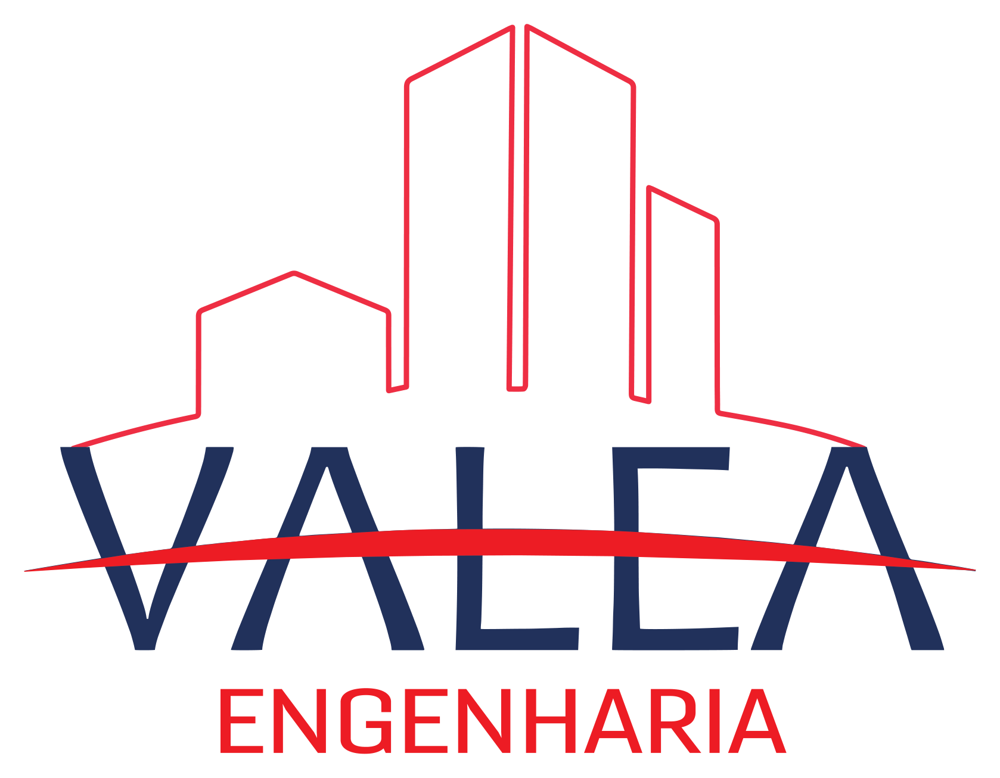
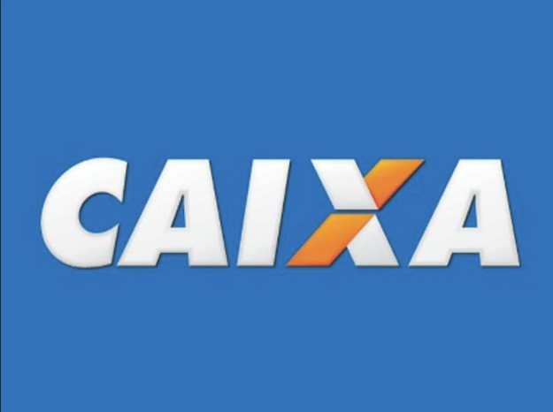
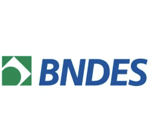

Ética e imparcialidade
Atuação pautada pela transparência e pelo compromisso com a verdade técnica.

Solicitar orçamentoPerícias • Avaliações • Consultorias de Engenharia
Soluções técnicas precisas, embasadas e confiáveis para processos judiciais, avaliações imobiliárias, laudos técnicos e consultorias em engenharia civil.
Sobre a VALEA
A VALEA Engenharia é uma consultoria técnica especializada em engenharia, com foco em perícias judiciais, avaliações de imóveis e assistência técnica. Sediada em Cascavel, Paraná, atua em todo o Brasil com laudos, vistorias e consultorias fundamentadas.
Fundada pela engenheira civil Stephanie Vicente Moi, a empresa nasceu para oferecer serviços periciais com independência, responsabilidade e metodologia científica.
Atuação pautada pela transparência e pelo compromisso com a verdade técnica.
Laudos com metodologia rigorosa, documentação e análise técnica consistente.
Respeito aos cronogramas judiciais, contratuais e institucionais.
CREA PR nº 70184 e responsável técnica CREA PR nº 156925/D.
Engenheira Civil • CREA PR 156925/D • IBAPE PR nº 1048
Serviços
Navegue pelos serviços e veja quando cada solução é necessária. Ao escolher um serviço, o contato por WhatsApp já é aberto com a mensagem contextualizada.
Laudo técnico
Documento técnico que determina o valor de mercado de imóveis urbanos ou rurais com base em metodologia científica.
Metodologia
Cada caso é conduzido com escuta técnica, análise documental, vistoria, organização de evidências, aplicação de critérios normativos e emissão de laudo com linguagem objetiva.
Agendar conversa técnicaColeta inicial de informações, objetivos, documentos e urgências do cliente.
Verificação de projetos, registros, contratos, fotos, medições e histórico do imóvel.
Inspeção técnica presencial, registros fotográficos e levantamento de evidências.
Aplicação de critérios técnicos, normas ABNT e, quando aplicável, tratamento estatístico.
Entrega do documento técnico e suporte para dúvidas, audiências ou complementações.
Vistorias e evidências
Registros de inspeções, áreas rurais, edificações, vizinhança e sinistros reforçam a natureza objetiva e documental do trabalho.
Clientes e instituições
A VALEA Engenharia possui atuação em demandas relacionadas a bancos públicos, tribunais, justiça federal, escritórios de advocacia, construtoras, imobiliárias e clientes particulares.


Contato
Estamos prontos para atender com qualidade, ética e responsabilidade. Envie sua demanda pelo WhatsApp, e-mail ou Instagram.